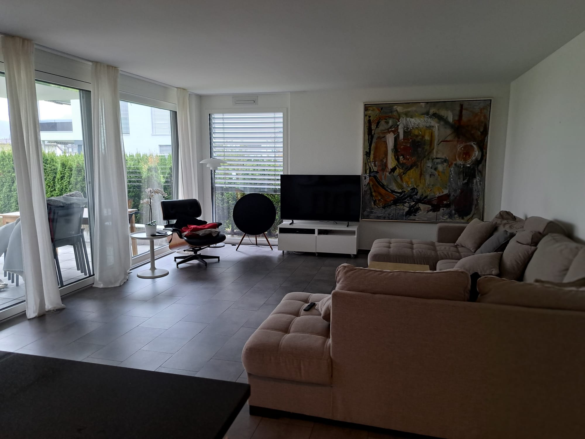

Home Exchange: Beautiful Swiss Village (Unterägeri)
We are an international family of four (2 adults, 2 kids – a 16-year-old girl and a 13-year-old boy) looking to exchange our home in Switzerland for 1-3 weeks from mid-July to mid-August 2024. We’re interested in a home exchange with families in the San Francisco Bay Area, Silicon Valley, or Los Angeles (preferably Marina del Rey or other neighborhoods) and possibly San Diego.
Our Home & Location
We live in a spacious, ground-floor apartment in the picturesque Swiss village of Unterägeri, located in the canton of Zug. The apartment has 4 bedrooms, 2 bathrooms, and a large open-plan kitchen, living, and dining area. We also have a private garden with a nearby playground in a lovely, peaceful area.
- A beautiful lake, 14 km all around, perfect for walks and water activities.
- Forests, mountains, and scenic bike & hike trails right at your doorstep.
- 10 minutes' drive to Zug, 45 minutes to Zurich, and 45 minutes to Luzern.
- An ideal base for exploring central Switzerland or simply relaxing in a peaceful, nature-filled environment.
Our Home in Pictures



About Us
We are a well-traveled, international family who take great pride in maintaining our home. We have lived in the Bay Area for many years and are familiar with both local cultures. We’ll take excellent care of your home and expect the same in return.
We’re Looking For:
- San Francisco Bay Area (or Silicon Valley) exchange, ideally for at least a week or longer.
- Los Angeles, preferably Marina del Rey or surrounding neighborhoods, or San Diego for about a week.
Contact Us:
If you’re interested or have any questions, feel free to reach out! We’re happy to provide more information about our home, the area, and the exchange logistics.